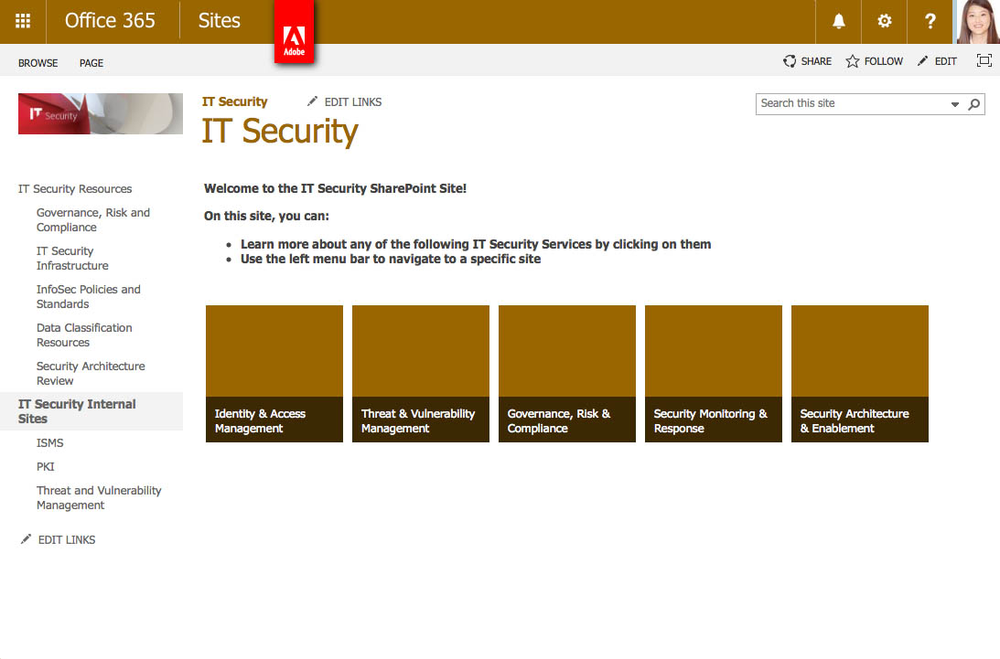
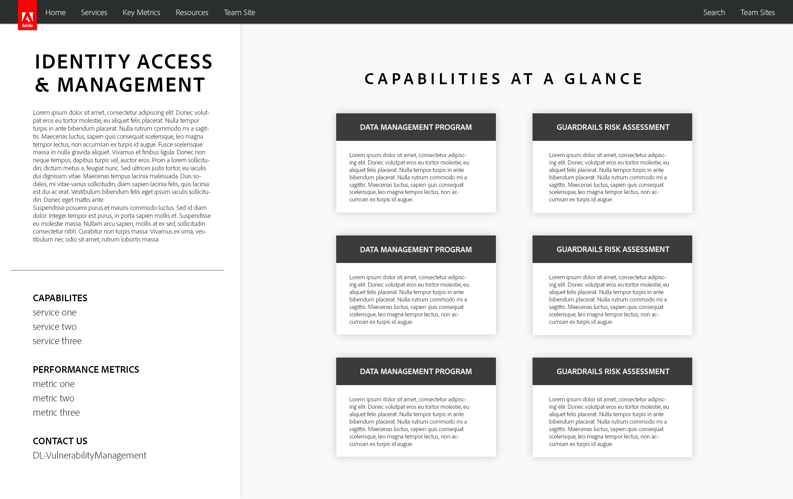
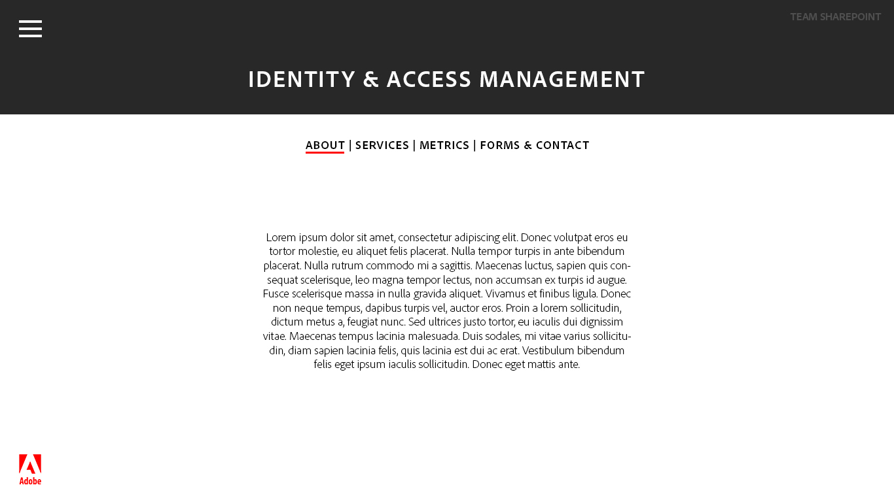
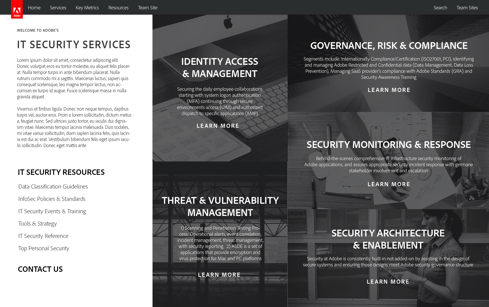

In the summer of 2015, I interned at Adobe's headquarters in San Jose as a UI/UX Web Design Intern on Adobe's IT Security team. My main project was to help the security team redesign their existing Sharepoint site, which was outdated and in need of a new coat of paint. To start this process, I spoke with members on the team about the existing site: its purpose, its use cases, its strengths, and its weaknesses. From there, I made sketches and Illustrator mockups and started the process of getting feedback and iterating. Once the team was content with the design, I translated the mockups into code and implemented them into the security team Sharepoint site.
Technologies used:The home page of the new redesigned Sharepoint site.
The Security team at any company isn't always the most exciting, but no one can doubt its importance. Security should be weaved into anything and everything you do and should be accessible to everyone. My task was to take a plain and unappealing site and transform it into something exciting and approachable for employees within the company.
The original, old Sharepoint team site.
 Technologies used:
Technologies used:One of the mockups (home view). Discared because of Sharepoint limitations.
 Technologies used:Another mockup (team view).
 Technologies used:Another mockup (capability view).
An earlier iteration of the home page.
Technologies used:An infographic giving an overview of Adobe's IT Security team.
Technologies used:An animation supplementing a security awareness training video.
Technologies used:An animation supplementing a security awareness training video.
Technologies used:An animation supplementing a security awareness training video.